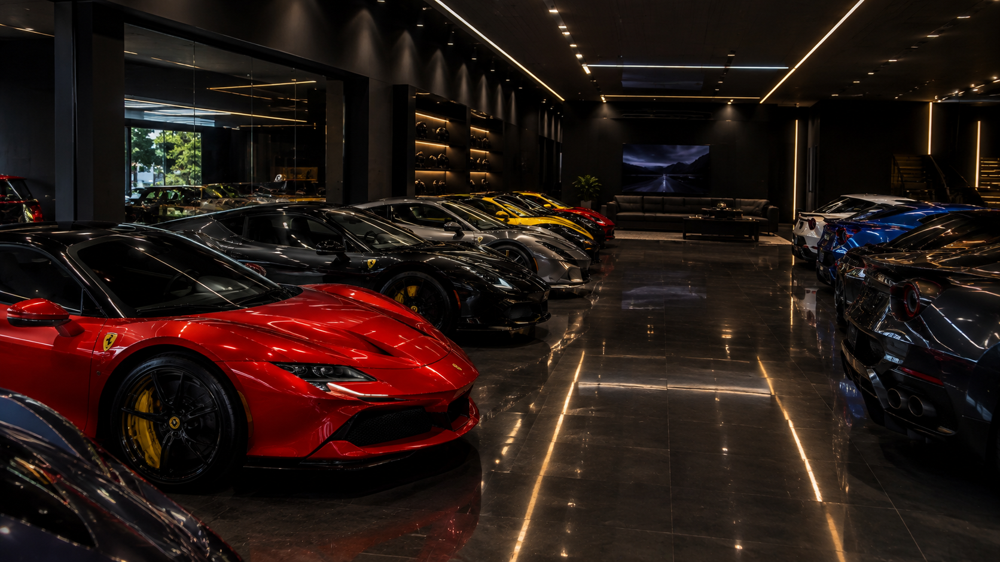

Superesportivos importados

A Mikin Motors nasceu em 2019, em Belo Horizonte, da vontade de aproximar o mercado brasileiro dos carros que antes só apareciam em revista. Começamos como um pequeno escritório de importação e hoje mantemos um showroom próprio com modelos em estoque.
Importar um superesportivo envolve muito mais do que comprar o carro. Existe documentação, desembaraço aduaneiro, homologação e transporte especializado. Nós assumimos cada uma dessas etapas, para que o cliente receba o veículo pronto para rodar.
Nosso compromisso é com a transparência: o cliente acompanha o processo do início ao fim e sabe exatamente quanto vai pagar em cada etapa.